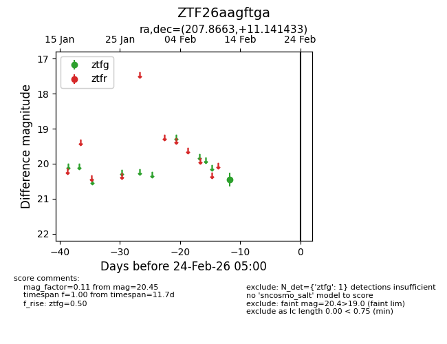
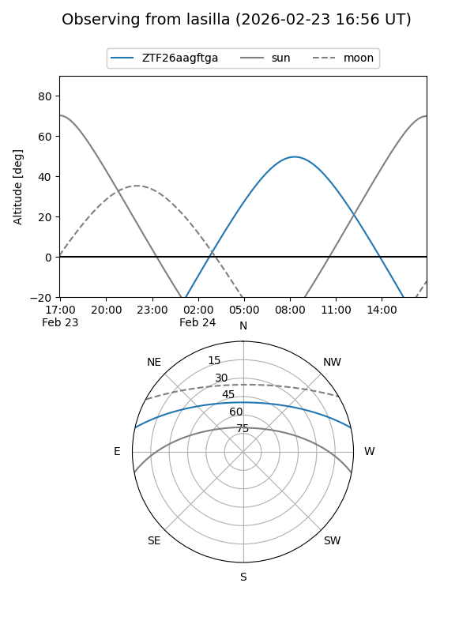
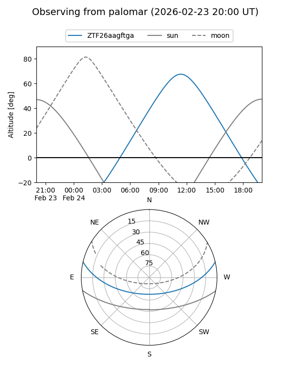

ZTF26aagftga
Target ZTF26aagftga at 2026-02-24 09:08
Aliases and brokers:
FINK: link
Lasair: link
ALeRCE: link
alt names
ZTF26aagftga (ztf,fink_ztf)
Coordinates:
equatorial (ra, dec) = 207.8663,+11.14143
equatorial (HMS+DMS) = 13:51:27.91,+11:08:29.16
galactic (l, b) = (347.2518,+68.67682)
Flags:
Photometry:
last ztfg=20.45
1 ztfg detections
Lightcurve

Visibility


Additional plots